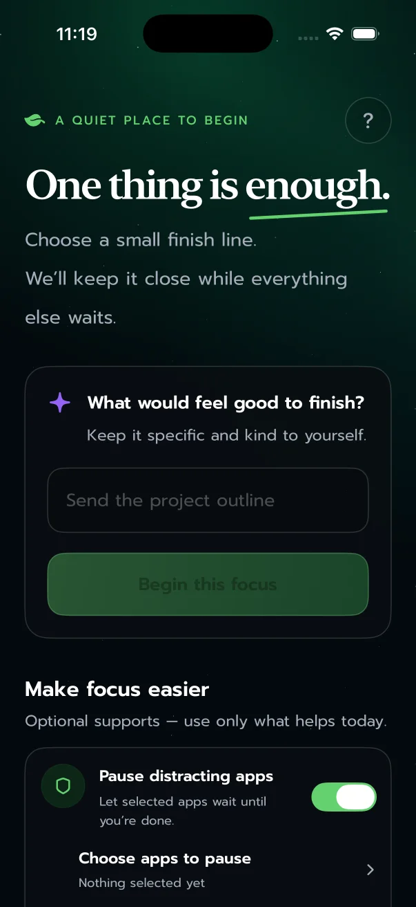
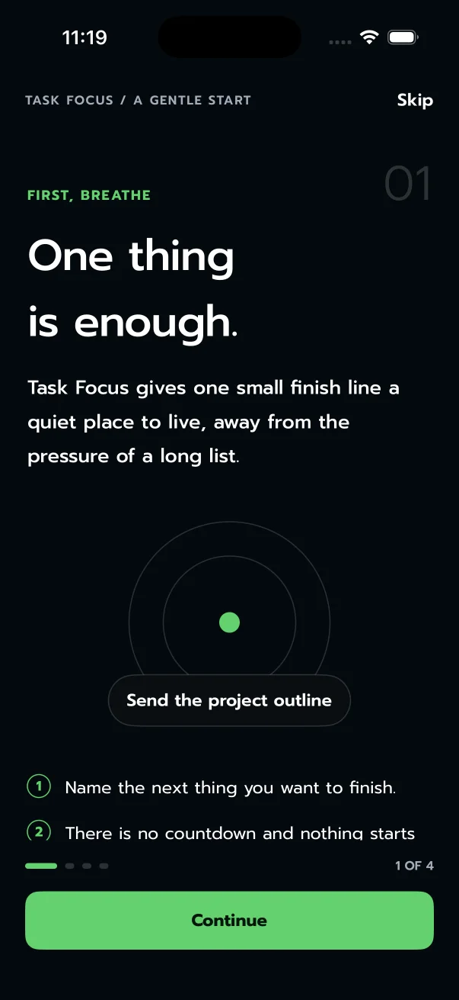

◆ A quiet place to begin
One thing
is enough.
Choose a small finish line. Task Focus keeps it close while everything else waits.
Made for iPhone · No account · No subscription

01 / THE IDEA
Not another list.
Just the next honest step.
Most productivity tools ask you to organize everything. Task Focus asks one kinder question: what would feel good to finish?
02 / A SMALL LOOP
From intention
to done.
-
01
Write it
Name one concrete thing you want to close. No backlog required.
-
02
Protect it
Optionally pause selected apps and add quiet check-ins.
-
03
Keep it close
Your task and elapsed time stay visible on the Lock Screen and Dynamic Island.
-
✓
Finish it
One tap marks it complete and makes paused apps available again.
03 / OPTIONAL SUPPORT
Distractions can
wait outside.
Choose the apps, categories, or websites that pull you away. Task Focus pauses them only during a protected session—and restores them as soon as you finish.
- Screen Time access only when you choose to use it
- Your selection stays private on your device
- Focus without app blocking always stays available
Visible without reopening the app
04 / KEEP IT CLOSE
Return without
starting over.
See your task and elapsed effort at a glance. There is no countdown and no deadline to miss—only a gentle place to return.
Gentle check-ins can quietly remind you to come back at the interval you choose.

05 / BUILT FOR REAL DAYS
Specific.
Private. Gentle.
Task Focus measures elapsed effort, not whether you beat a timer. Supports are optional. Nothing starts without you.
Write it. Add support if useful. Keep it visible. Finish when you’re ready.
06 / YOUR ATTENTION IS YOURS
No account.
No ads. No tracking.
Task titles, selected apps, and local usage measurements stay on your device. Task Focus does not sell personal information because it does not collect it.
Read the privacy policy07 / SIMPLE ACCESS
Start free.
Keep it simple.
Pausing apps is free and always will be. As many focus sessions as you like, with the current week of history kept.
Everything the app remembers afterwards: every session kept for good, what it adds up to, and a profile for each kind of focus. One payment, no renewal.
One small finish line